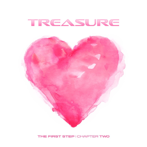

|

|
Album:"THE FIRST STEP: CHAPTER TWO"
Writers: R.Tee, Hyunsuk,Yoshi, and Haruto
Released: 18th September,2020
“I Love You” depicts a boy’s love for a girl and how he is unable to live without her. Colorful and vibrant visuals are served amidst passionate youthful sentiments. Shots of different sets and slick dance sequences add a greater degree of imagination to this atypical romantic song.
Watch and Listen Here
|